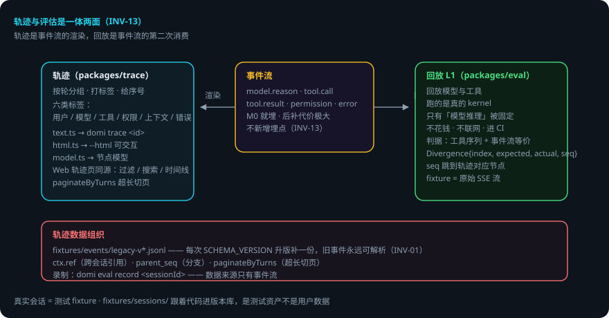

DOMI · DOCS
轨迹与回放
本页回答四个问题：轨迹是什么？回放怎么用真实会话当测试？轨迹数据怎么组织？出错了会怎样？
packages/trace+packages/eval的 L1。 domi 把它做成了一等公民：轨迹与评估是一体两面——轨迹是事件流的渲染，回放是事件流的第二次消费（INV-13）。 贯穿例子：给登录接口加限流——改动前先domi trace <id> --html看历史，改完用同一会话回放验证。
先说结论
- 轨迹 = 事件流的渲染，不是另做 tracing。
model.reason/tool.call/tool.result/permission/error每条事件都是轨迹的一节。 - 埋点必须第一天就做：
model.reason与tool.*事件从 M0 就埋，后补代价极大。 - 回放 = 真实会话当测试 fixture：回放的是模型与工具，跑的是真的 kernel；不花钱、不联网、可进 CI。
- fixture 存模型的原始 SSE 响应流，不是最终结果——只有「模型推理」被固定住。
- 判据是「工具调用序列 + 事件流等价」，对不上给
Divergence{index, expected, actual, seq}——seq 直接跳到轨迹面板对应节点。 - 分页 / 引用 / 分支在事件里都有对应：
ctx.ref/parent_seq/paginateByTurns。
用到的词
| 词 | 意思 |
|---|---|
| 轨迹 | 事件流按轮分组、打标签、给序号的渲染。 |
| 回放 | 用录制的模型响应重跑真实 kernel。 |
| fixture | 录制的原始 SSE 响应流（测试资产）。 |
| 节点模型 | 轨迹的六类标签（用户 / 模型 / 工具 / 权限 / 上下文 / 错误）。 |
1. 总体流程

2. 轨迹 = 事件流的渲染
事件流里每一条 model.reason（思维链）、tool.call / tool.result、permission、error 都是轨迹的一节。渲染层只是把事件按轮分组、打标签、给序号：
packages/trace/src/text.ts—— 纯文本轨迹（domi trace <id>）packages/trace/src/html.ts—— HTML 轨迹（domi trace <id> --html <路径>，可交互）packages/trace/src/model.ts—— 轨迹的节点模型（用户 / 模型 / 工具 / 权限 / 上下文 / 错误六类标签）
Web 端「轨迹」页用同一份模型：按轮分组、六类标签、Turns / Calls 过滤、搜索、时间线。TUI 的 domi trace CLI 与 --html 输出同源。
埋点必须第一天就做：model.reason 与 tool.* 事件从 M0 就埋，后补代价极大。
3. 回放：真实会话 = 测试 fixture
事件流可回放 ⟹ 真实会话可以当作测试 fixture 重放。这就是 L1（packages/eval/src/replay.ts）：
- 回放的是模型与工具，跑的是真的 kernel：真的
buildContext、真的runTurn、真的终止条件、真的事件流。所以它能抓到「改了 prompt 之后工具调用顺序变了」这类回归。 - 不花钱、不联网、可进 CI。回放期间任何出站调用都让测试失败（
assertNoNetwork）。 - fixture 存模型的原始 SSE 响应流，不是最终结果——tool 执行、权限检查、事件生成、压缩触发全都还在真实跑，只有「模型推理」这一步被固定住（
fixtures/sessions/，跟着代码进版本库，是测试资产不是用户数据）。 - 判据是「工具调用序列 + 事件流等价」：从第几次调用开始对不上，给出
Divergence{index, expected, actual, seq}——seq 能直接跳到轨迹面板的对应节点。
录制：domi eval record <sessionId>（数据来源只有事件流，不新增埋点）。
4. 轨迹数据的组织
fixtures/events/legacy-v*.jsonl—— 历史事件流 fixture：每次SCHEMA_VERSION升版补一份，保证旧事件永远可解析（INV-01 的机器验证）。- 分页 / 引用 / 分支在事件里都有对应：
ctx.ref（跨会话引用）、parent_seq（分支）、paginateByTurns（超长会话按轮切页）。
5. 出错了怎么办：回放对不上，怎么看
- 工具调用顺序变了。
Divergence{index, expected, actual, seq}——从第几次开始对不上。用seq跳到轨迹面板对应节点，看是哪一步变了。 - 改了 schema 旧事件解析不了。
fixtures/events/legacy-v*.jsonl保证旧事件永远可解析——升版时补一份。 - 回放期间出站调用。
assertNoNetwork失败。查 fixture 是否依赖网络。 - 轨迹缺节。
model.reason/tool.*事件没埋全——后补代价极大，这是 M0 就要做的事。 - 超长会话加载慢。
paginateByTurns按轮切页。
一张表看全部情况
| 情况 | domi 做什么 | 你要做什么 |
|---|---|---|
| 回放对不上 | Divergence（index/seq） | 用 seq 跳轨迹节点排查 |
| schema 升版 | legacy fixture 保解析 | 升版补一份 legacy-v* |
| 有出站调用 | assertNoNetwork 失败 | 查 fixture 依赖 |
| 轨迹缺节 | — | 补事件埋点（M0 就该有） |
| 超长会话 | paginateByTurns 切页 | 不用管 |
6. 可靠性靠什么
- 一体两面：轨迹与评估用同一份事件流，不重复造数据。
- 埋点先行：M0 就埋 reason / tool 事件，后补成本可控。
- 只固定模型推理：回放时其余环节真实跑，回归抓得到。
- 旧事件永可解析：legacy fixture 随 schema 升版补齐。
- seq 可跳转：Divergence 与轨迹面板用 seq 对齐，排查有入口。
已知限制
- 回放只固定「模型推理」：其它环节仍受环境影响。
- fixture 是测试资产：行为变更后可能需要重录。
- 轨迹渲染只覆盖事件流已有的事件：没埋的点画不出来。
- legacy fixture 需要人工随升版维护。
代码在哪里
| 主题 | 位置 |
|---|---|
| 纯文本轨迹 | packages/trace/src/text.ts |
| HTML 轨迹 | packages/trace/src/html.ts |
| 节点模型（六类标签） | packages/trace/src/model.ts |
| L1 回放 | packages/eval/src/replay.ts |
| 历史事件流 fixture | fixtures/events/legacy-v*.jsonl |
| 会话 fixture | fixtures/sessions/ |
相关
- 事件契约：Domi Protocol。
- L1 / L2 评估体系：评估体系。
- 状态栏指标（另一个事件流投影）：
packages/observability/src/report.ts与packages/kernel/src/metrics.ts。